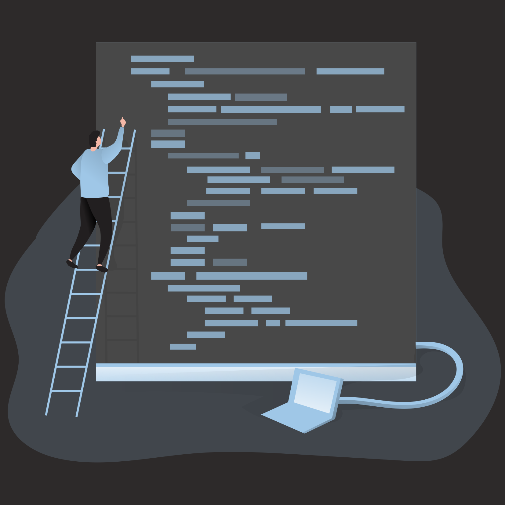

Professional experience.
Discover my journey through diverse roles, where I've gained valuable skills and hands-on experience.
From internships at renowned companies to part-time positions that honed my abilities, each role has contributed significantly to my development as a future Full Stack developer.
